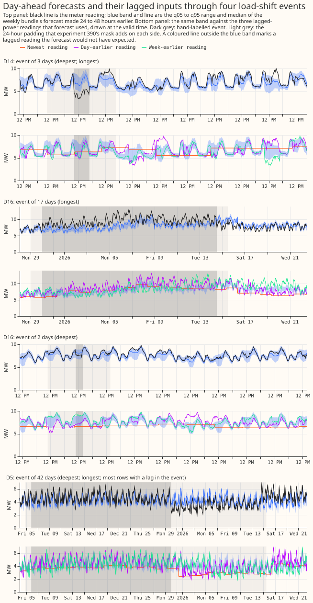

A level state, a winter re-score, spread bins, a short-history anchor, and lag-event harm, all on stored forecasts
A level filter on the weekly XGBoost model's own residuals closes part of the model's gap to the GAM stack at D14 and widens it at D11, so the filter is not the whole explanation. The weekly bundle is experiment 381's XGBoost model (solar summary, sunny flag, 1-year half-life). The GAM stack is experiment 377's stack without its smoothing stage S below 168 hours. D11 and D14 are two of the 16 Primaries (primary substations) scored here. The filter follows experiment 136's two-state filter, which in turn follows the variational noise filter of de Vilmarest and Wintenberger (2022). Experiment 390 found that a rolling median offset does not copy the filter.
Terms used below. A load-shift event is a labelled period in which load was moved between Primaries. The signed-MW six (D5, D9, D10, D11, D14, D16) are the Primaries whose readings are signed megawatts, and the MVA-only eight (D2, D3, D4, D8, D12, D19, D21, D22) report apparent power only. D15 and D18 have under a year of history and are reported separately. K0 to K4 are the Part A arms. Experiment 383's arm d is the plain weekly member, c1 drops the lags that lie inside an event, and c2 serves a lagless model on rows with a lag inside an event and arm d elsewhere. S0M and S1M are experiment 389's arms (S1M adds the ensemble mean and standard deviation of temperature and shortwave radiation as columns; S0M does not). Economy 7 is a UK off-peak electricity tariff. An event's depth is its labelled change in load in megawatts, and the padded mask is experiment 390's mask, which extends each labelled event by 24 hours on each side.
Nothing in this experiment is refitted. Every number re-scores forecasts that earlier
experiments stored, so the monthly-refit rule does not apply. The score is the continuous ranked
probability score (CRPS) in points of effective capacity (1 point is 1% of the Primary's effective
capacity), for days 1 to 10 unless stated, on fold_a_daily_gap_v1 under demand-v1. Intervals
resample whole months, or whole events in Part F. "Raw" means the stored forecast without widening,
and _w means widened by the factor 1.15 about the median.
Part A: a level state on the weekly bundle
The stack's two-state filter closes 41% of the bundle's D14 gap and widens its D11 gap. K0 is
the stored weekly bundle. K1 runs experiment 377's two-state filter (a level plus an AR(1)
transient, one filter per hour band, pooled noise settings from e00377_run.noise_hyper) on the
bundle's residuals, using readings at least 3.5 hours before the origin. K2 is a one-state
random-walk level with a gain and a per-half-hour decay fitted per Primary on an expanding window
(prior gain 0.05, decay 0.998 where there is no training data), and K3 pools K2's two numbers across
the 16 Primaries.
| Primary | K0 | K1 | K2 | K3 | GAM stack |
|---|---|---|---|---|---|
| D11 | 2.577 | 2.672 | 2.615 | 2.679 | 2.429 |
| D14 | 2.510 | 2.387 | 2.45 | 2.44 | 2.209 |
- K1 at D11 is worse than K0 by +0.095 points (interval +0.035 to +0.152).
- K1 closes 41% of the D14 gap, K2 closes 19%, and K3 closes 25%.
- On the signed-MW six, K0 scores 3.023, K2 3.001, K3 3.000, K1 3.043, and the GAM stack 2.949.
- On the MVA-only eight, K0 scores 3.721, K2 3.743, and K1 3.804.
- In the 0 to 24 h band on the signed-MW six, the raw scores are K0 2.564, K1 2.457, K2 2.399, and the GAM stack 2.293 (widened by 1.15: K0 2.584, K2 2.429).
- Raw cold-night q95 coverage on the signed-MW six rises from 0.736 (K0) to 0.772 (K2) and 0.812 (K1), against 0.880 for the GAM stack (widened by 1.15: 0.773, 0.806 and 0.841).
- K4 (the GAM stack without its filter, plus K2, on six Primaries) scores 2.898 against 2.954 for the stack on the same rows, so K4 beats the stack by 0.056 points, more than P3's 0.03 band, in the favourable direction. K4 has no interval, and it is worse than the stack at D14 (2.263 against 2.211).
P1 and P2 fail, P3 and P4 hold, so the porting threshold is not met. P1 fails: K1 closes at least half of the gap at neither D11 nor D14. P2 fails: K2 closes under half at D14 and widens the D11 gap. P3 holds: K4 recovers the stack's score within 0.03 points. P4 holds: the 0 to 24 h band improves, so the transient does not hurt it. The porting threshold is not met.
Part B: winter re-score
Economy 7 columns change nothing, and the ensemble mean and spread columns help cold nights.
Against monthly/control, the Economy 7 arm differs by -0.000 on the winter signed-MW six (interval
-0.004 to +0.004), and by +0.005 at D14 in winter (+0.001 to +0.012). Experiment 389's S1M (mean and
standard deviation of temperature and shortwave radiation as columns) differs by -0.040 on the
signed-MW six (-0.065 to -0.010), -0.031 on the MVA-only eight, -0.058 at D11, -0.032 at D14, and
-0.070 (six) and -0.144 (eight) on cold nights. S0M equals the control. S1M closes 36% of the D11
gap and 7% of the D14 gap; the solar arm closes 12% of the D14 gap. Cold-night q95 coverage on the
signed-MW six is 0.734 for the control, 0.726 for S1M, and 0.879 for the GAM stack. P5's
top-quartile and pooled clauses are not scored here, and S1M's pooled interval excludes zero, so P5
is untested. In winter the S1M difference on the signed-MW six is -0.019 (-0.093 to +0.091), against
-0.040 over the year, so winter does not carry the gain.
Part C: spread bins
S1M's gain over S0M does not rise with temperature spread. Experiment 394's tables were not available, so only the top-decile and regime bins are scored. S1M minus S0M by temperature-spread bin: lower tercile -0.038, middle -0.017, upper -0.020, top decile -0.019 (-0.053 to +0.018). By the share of the 51 ensemble members below 5 °C at the week's coldest day: all warm -0.023, 0 to 25% +0.021, split +0.015, 75 to 100% -0.067, all cold -0.075. The gain therefore sits where the ensemble agrees on cold weather, not where it is split. All-row q95 coverage moves from 0.921 to 0.913, and the ratio of 90% band width to absolute error from 3.74 to 3.62. The intervals are 95%. P6 fails.
Part D: short-history level anchor
A 7-day level anchor cuts D15's median bias and harms the other 14 Primaries. The anchor is the median of the bundle's own residuals over the previous 7, 14 or 28 days, shrunk by the days of history over the window length. At D15 (4 scored months) the score falls from 15.186 to 13.593 (7 days), 14.071 (14 days), and 14.151 (28 days); the 7-day change is -1.593 (-3.574 to +0.609), and the mean signed error falls from -17.0 to -4.8 points (7 days), -4.7 (14 days), and -5.9 (28 days). D18 (6 scored months) gains nothing. On the other 14 Primaries the 7-day anchor changes the score by +0.101 (+0.049 to +0.153), the 14-day anchor by +0.069 (+0.006 to +0.137), and the 28-day anchor by +0.017 (-0.025 to +0.057). P7's bias clause holds for the 14-day anchor (a 72% cut), and its no-harm clause fails. The 7-day score change at D15 is within its interval. Part A's filters improve D15 more than the anchors do (K0 15.186, K1 13.380, K2 13.445), so the anchor is not the only fix.
Part E: lag-encroachment sweep on experiment 391's boosters
Shifting lag readings into an event moves the median by up to a third of the step and leaves the
band as wide. Experiment 391's stored b0 boosters, 16 Primaries and 86,907 distinct rows per
setting (one run on the 15th of each of 12 months), were given lag columns shifted by the event step
for k = 1, 2 and 3 of the origin, day and week lags. The median moves by 1.3%, 17.3% and 36.8% of
the step. The 90% band is 1.005, 1.009 and 1.008 times as wide as with clean lags. The clean reading
lies inside the 90% band on 0.875 of rows at k = 0 and 0.826 at k = 3, and the event-level reading
inside it on 0.681 and 0.784. The q95 reaches the event level on 0.701 of rows at k = 0 and 0.812 at
k = 3. No lagless booster is stored, no n1 sweep was run, and no real-event comparison was made.
Part F: score on unpadded hand-labelled load-shift events
On rows whose target lies outside every event, a power lag inside an event raises the score by
about 1 point for the weekly bundle on the signed-MW six, and by 1.7 to 2.0 points for the GAM
stack. Events are the 184 merged hand-labelled intervals of
briefs/sw_block_detector_label_table.csv, unpadded. No forecast predicts an event, so a median
that stays at normal running is the desired behaviour; the harm table therefore scores rows whose
target lies outside the event, and coverage inside events is description only. Harm is the CRPS of
rows with one to three lags in an event, minus the same Primaries' rows with clean lags; intervals
resample whole events (34 events for the signed-MW six, 25 for the MVA-only eight). Flagged
exact-zero half-hours are dropped (filtered, the headline); the unfiltered point estimates differ
in the third decimal and the interval bounds by up to 0.1. The baseline is each Primary's overall
clean mean. Matching it on Primary, month and lead band gives +1.06 (-0.05 to +2.48) for the bundle
and +1.25 (-0.01 to +2.89) for the GAM stack on the six, so the reading that the interval excludes
zero is fragile.
| Forecast | Six: harm (interval) | Eight: harm (interval) | Six, 3 lags: q95 coverage |
|---|---|---|---|
| Weekly bundle | +1.03 (+0.05 to +2.32) | +0.37 (-0.18 to +1.05) | 0.831 |
| Monthly control | +0.57 (-0.03 to +1.49) | +0.50 (-0.13 to +1.25) | 0.818 |
| GAM stack | +1.67 (+0.06 to +3.77) | +1.97 (+0.46 to +3.80) | 0.840 |
| Experiment 383 d | +0.97 (+0.08 to +2.10) | +0.47 (-0.17 to +1.24) | 0.822 |
| Experiment 383 c1 | +0.79 (+0.09 to +1.74) | +0.44 (-0.14 to +1.19) | 0.735 |
| Experiment 383 c2 | +0.36 (-0.15 to +1.15) | +0.60 (+0.02 to +1.38) | 0.779 |
With clean lags the bundle's q95 coverage is 0.928 on the six.
The median sits about halfway to the event reading when no lag is in the event and nearly at the event reading when lags are (sign-free). The depth missed per event is |median(actual − median forecast)| over |depth|, where 0 means the median reaches the event reading and 1 means it stays at normal running. For the weekly bundle it is 0.50 with no lag in the event (52 events), 0.19 with one or two (27), and 0.16 with three (16). The monthly control scores 0.42, 0.20 and 0.12; the GAM stack 0.63, 0.30 and 0.27; experiment 383's c2 0.39, 0.15 and 0.14. Lag encroachment is therefore consistent with dragging the median into the event. The 90% band stays about as wide (the bundle's median width is 23.1, 26.1 and 24.2 points).
The 24-hour padded mask gives a lower coverage figure. On the bundle's signed-MW six, rows with a lag in the padded mask and a target outside it have q95 coverage 0.786 (interval 0.506 to 0.932, 13 events); the unpadded labels give 0.902 (0.819 to 0.960, 34 events). The two row sets differ (17,111 and 29,631 rows) and the intervals overlap, so the data do not show that padding changes the result. Of 36,718 padded-contaminated rows, 8,485 have no lag in an unpadded event.
Curtailment cost was not re-scored in this experiment. Part H below corrects the label table's sign column; the harm table, coverage and the sign-free depth above do not depend on it. Experiment 390's event-fan figure is redrawn below with the event masks shaded.

Part H: the label table's sign convention
In the label table, every "X to Y" row has a positive depth_mw and means that X's power falls.
The audit measures, for each labelled event and each Primary it names, the mean cleaned power in the
event's first 48 hours (or the whole event if shorter) minus the mean in the 48 hours before the
onset. Power is read through studies.power.scan_power, so flagged zeros are dropped. The step is a
plain difference of means, with no weather correction. Of the 112 rows with an end time and a depth,
104 are measurable.
- At X, the measured step is negative in 36 of the 44 measurable "X to Y" rows.
- In the other 60 measurable rows, the first-named Primary's step has the sign of
depth_mwin 53. - The rule "X to Y: X falls; any other row: the sign of
depth_mw" matches the measured sign in 89 of 104 events. The earlier convention (first-named Primary takes the sign ofdepth_mwin every row) matched 61 of 104. - 51 of 112 signs are corrected: 43 from measurement and 8 from the rule where no step could be
measured. The corrected copy is
ml-experiments/00395-.../sw_block_detector_label_table_corrected.csv. - The measured step has a median of 0.63 times the labelled
|depth_mw|. The labelled size is kept, because a 48-hour mean dilutes a drop that deepens later. - Among 72 events with a measurable second Primary, the two steps have opposite signs in 44, so load conservation between the pair is only partly visible in 48-hour means.
With the corrected signs, the median follows the event about halfway with no lag in the event and nearly fully with three. The share followed is 1 − (actual − median forecast) / signed depth, where 0 means the median sits at normal running and 1 means it sits at the event reading. Medians over events, for 0, 1 or 2, and 3 lags in the event:
| Forecast | 0 lags (52 events) | 1 or 2 lags (27) | 3 lags (16) |
|---|---|---|---|
| Weekly bundle | 0.52 | 0.83 | 0.94 |
| Monthly control | 0.60 | 0.83 | 0.94 |
| GAM stack | 0.40 | 0.88 | 0.97 |
| Experiment 383 d | 0.63 | 0.85 | 0.95 |
| Experiment 383 c1 | 0.67 | 0.87 | 0.92 |
| Experiment 383 c2 | 0.70 | 0.85 | 0.95 |
The sign-free depth missed in Part F, 0.50, 0.19 and 0.16 for the bundle, becomes 0.48, 0.17 and 0.06 as a share of the depth not followed. With the corrected sign, the median of actual minus forecast has the sign of the event in 90% of events with no lag in the event (it was 69%). Part E does not use labelled depth, so the correction does not change it.
Checks
- Which actuals the scorer read. Experiment 103's
rows.parquet, through the feature cache. It carries nodrop_reasonfilter, so 38 unique scored half-hours of 256,981 (0.015%) are flaggedsubstation_zero, all exactly zero: D21 13, D8 7, D22 5, D9 5, D12 4, D18 3, D16 1. The 622 flagged rows counted elsewhere are the cleaned table's flagged rows over the year, not scored half-hours. Part F drops the flagged rows and also reports the unfiltered numbers. Parts A to E score unfiltered; the 38 rows cannot move a mean by more than their share of the rows. - Flagged zeros inside labelled events. 6 inside unpadded events (D22 5, D8 1) and 5 inside the 24 h padded mask (D22 5).
- Median minus mean. Not computed: the stored forecasts hold quantiles only.
- Error of the mean beside each contrast. Every contrast above carries its interval. Contrasts without an interval are descriptive.
- Which audit triggers fired. P1 and P2 contradicted the hypothesis, and P7's no-harm clause failed.
- Verdict. Partly supported: P3 and P4 hold; P1, P2 and P6 fail; P5 and P7 are untested as written.
- Cadence. Nothing is refitted, so the monthly-refit rule does not apply.
Caveats and what to try next
- D15 has 4 scored months and D18 has 6, so Part D rests on very few months.
- Part C could not be set beside experiment 394's tables, and its spread bins are ranked over all leads before days 1 to 10 are kept (38% lower, 33% middle, 21% upper, 8% top decile of the scored rows). Ranked within days 1 to 10, the bins read lower -0.046, upper -0.012, top decile -0.023. S1M's q95 coverage falls in every bin by 0.005 to 0.013, so P6, which concerns coverage, is judged on CRPS only here.
- Part F draws no per-forecast chart of coverage by lag count and event length; the tables carry it.
- The Part F events for D5 overlap in the padded mask, which merges later events.
- Experiment 391's
n1,n0, andoboosters were not swept, and no lagless booster exists. - The measured event sizes use 48-hour means, so they dilute drops that deepen later; the corrected table keeps the labelled size.
- K1's D14 gain (-0.122, interval -0.354 to +0.059) includes zero and sits in winter rows. K2 also worsens D11 slightly (+0.038, +0.000 to +0.074).
- K3 chose the prior (0.05, 0.998) in all 192 Primary-months, and K2 chose it in 91, so the prior may have been tuned on this same year. The gain grid often hits its lower edge, 0.005.
- K1's pooled noise settings come from an earlier experiment's fit, whose window was not checked against 2025-07 to 2026-06.